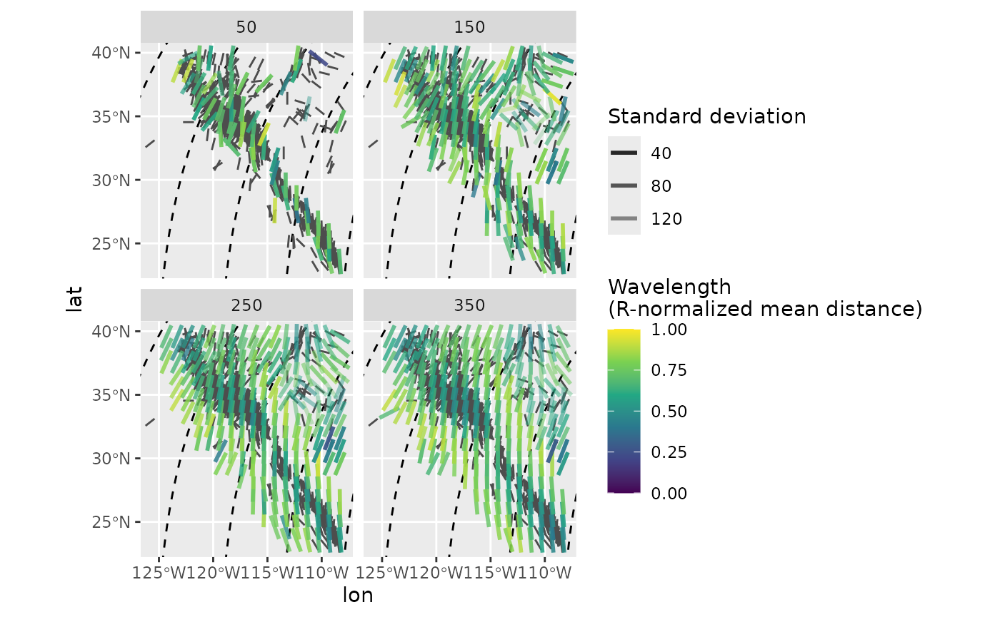
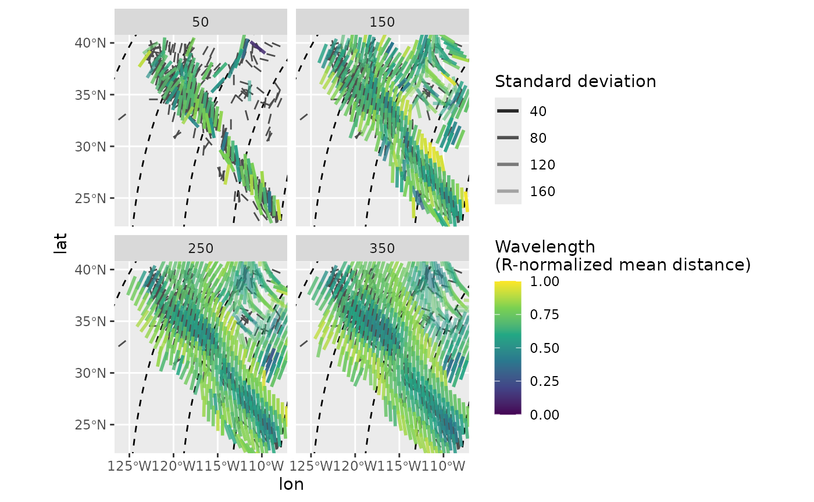
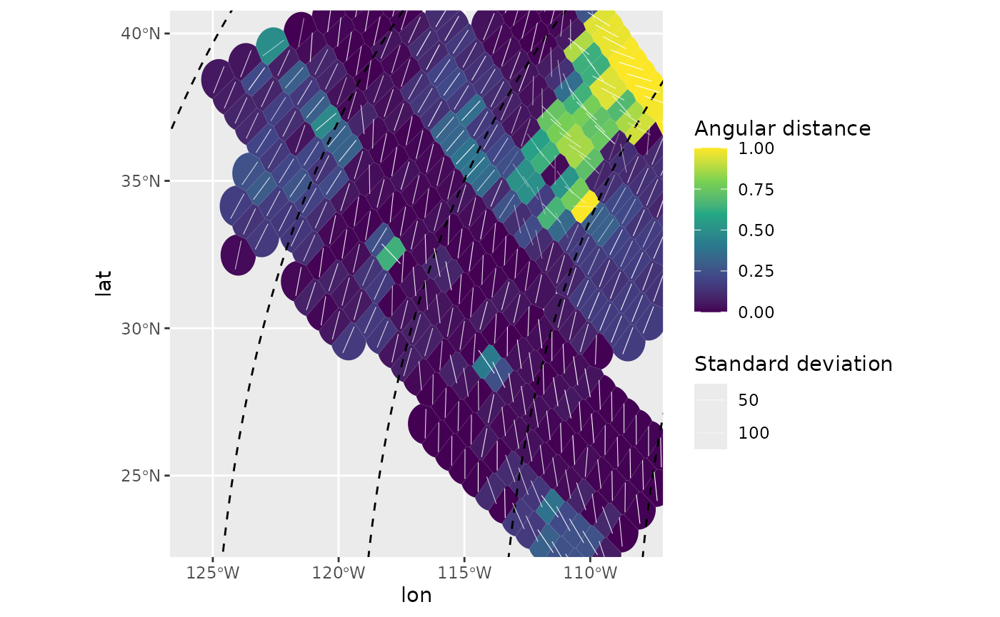

5. Spatial interpolation
Tobias Stephan
2024-04-07
Source:vignettes/E_interpolation.Rmd
E_interpolation.RmdThis vignette teaches you how to spatially interpolate stress fields and display the lateral patterns of stress anomalies.
data("san_andreas")
data("borders")
data("cpm_models")
por <- cpm_models |>
subset(model == "NNR-MORVEL56") |>
equivalent_rotation("na", "pa")Interpolation
Geographic coordinate system
Spatial interpolation of stress data is based on the aforementioned metrics (the algorithm is a modified version of the MATLAB script ‘stress2grid’ by Ziegler and Heidbach (2017).
mean_SH <- stress2grid(san_andreas, gridsize = 1, R_range = seq(50, 350, 100))The default settings apply quality and inverse distance weighting of the mean, as well as a 25% cut-off for the standard deviation.
The data can now be visualized:
trajectories <- eulerpole_loxodromes(x = por, n = 40, cw = FALSE)
ggplot(mean_SH) +
geom_sf(data = borders, fill = "grey80") +
geom_sf(data = trajectories, lty = 2) +
geom_spoke(data = san_andreas, aes(lon, lat, angle = deg2rad(90 - azi)), radius = .5, color = "grey30", position = "center_spoke") +
geom_spoke(aes(lon, lat, angle = deg2rad(90 - azi), alpha = sd, color = mdr), radius = 1, position = "center_spoke", lwd = 1) +
coord_sf(xlim = range(san_andreas$lon), ylim = range(san_andreas$lat)) +
scale_alpha(name = "Standard deviation", range = c(1, .25)) +
scale_color_viridis_c(
"Wavelength\n(R-normalized mean distance)",
limits = c(0, 1),
breaks = seq(0, 1, .25)
) +
facet_wrap(~R)
PoR coordinate system
The interpolated direction of far apart data points will suffer from distortions due to the underlying projection. In order to prevent such effects, the interpolation can be done in the PoR reference frame where the direction stays constant no matter the distance between the data points. Assuming that the stress field is sourced by the plate boundary force, the model-based interpolation allows more reliable results for areas close to plate boundaries.
mean_SH_PoR <- PoR_stress2grid(san_andreas, PoR = por, gridsize = 1, R_range = seq(50, 350, 100))
ggplot(mean_SH_PoR) +
geom_sf(data = borders, fill = "grey80") +
geom_sf(data = trajectories, lty = 2) +
geom_spoke(data = san_andreas, aes(lon, lat, angle = deg2rad(90 - azi)), radius = .5, color = "grey30", position = "center_spoke") +
geom_spoke(aes(lon, lat, angle = deg2rad(90 - azi), alpha = sd, color = mdr), radius = 1, position = "center_spoke", lwd = 1) +
coord_sf(xlim = range(san_andreas$lon), ylim = range(san_andreas$lat)) +
scale_alpha(name = "Standard deviation", range = c(1, .25)) +
scale_color_viridis_c(
"Wavelength\n(R-normalized mean distance)",
limits = c(0, 1),
breaks = seq(0, 1, .25)
) +
facet_wrap(~R)
Rasterize the interpolation
The function compact_grid() selects only data with the
minimum search radius from interpolated layers with different search
radii. Since the interpolation was performed in the PoR CRS, the
interpolated azimuths are additionally given in the transformed
azimuths. This allows to easily calculate misfits from predicted
directions:
mean_SH_PoR_reduced <- mean_SH_PoR |>
compact_grid() |>
dplyr::mutate(cdist = circular_distance(azi.PoR, 135))Using circular_distance() in the example above, we can
display the spatial patterns of the misfits of the stress direction from
the predicted direction of the plate boundary force. Since the
interpolation was performed in the PoR CRS, the grid is not composed of
equally spaced grid cells in the geographic CRS. To rasterize such
grids, we can, e.g., use Voronoi cells from the ggforce
package.
ggplot(mean_SH_PoR_reduced) +
ggforce::geom_voronoi_tile(
aes(lon, lat, fill = cdist),
max.radius = .7, normalize = FALSE
) +
scale_fill_viridis_c("Angular distance", limits = c(0, 1)) +
geom_sf(data = borders, color = "grey80", fill = NA) +
geom_sf(data = trajectories, lty = 2) +
geom_spoke(
aes(lon, lat, angle = deg2rad(90 - azi), alpha = sd),
radius = .5, position = "center_spoke", lwd = .2, colour = "white"
) +
scale_alpha("Standard deviation", range = c(1, .25)) +
coord_sf(xlim = range(san_andreas$lon), ylim = range(san_andreas$lat))
The map highlights stress anomalies which show misfits to the direction of tested plate boundary force.
Kernel dispersion
Another way to analyse spatial misfits is the kernel dispersion,
i.e. the local dispersion within a user-defined window (kernel). The
kernel´s half width can be a single number (km) or a range of widths.
The latter requires to compact the grid result (x) to find
the smallest kernel size containing the the smallest dispersion
(compact_grid(x, 'dispersion')).
It is recommended to calculate the kernel dispersion on PoR transformed data to avoid angle distortions due to projections.
san_andreas_por <- san_andreas
san_andreas_por$azi <- PoR_shmax(san_andreas, por, "right")$azi.PoR
san_andreas_por$prd <- 135
san_andreas_kdisp <- kernel_dispersion(san_andreas_por, gridsize = 1, R_range = seq(50, 350, 100))
san_andreas_kdisp <- compact_grid(san_andreas_kdisp, "dispersion")
ggplot(san_andreas_kdisp) +
ggforce::geom_voronoi_tile(
aes(lon, lat, fill = stat),
max.radius = .7, normalize = FALSE
) +
scale_fill_viridis_c("Angular distance", limits = c(0, 1)) +
geom_sf(data = borders, color = "grey80", fill = NA) +
geom_sf(data = trajectories, lty = 2) +
geom_spoke(
data = san_andreas,
aes(lon, lat, angle = deg2rad(90 - azi), alpha = unc),
radius = .5, position = "center_spoke", lwd = .2, colour = "white"
) +
scale_alpha("Standard deviation", range = c(1, .25)) +
coord_sf(xlim = range(san_andreas$lon), ylim = range(san_andreas$lat))
References
Mardia, K. V., and Jupp, P. E. (Eds.). (1999). “Directional Statistics” Hoboken, NJ, USA: John Wiley & Sons, Inc. doi: 10.1002/9780470316979.
Ziegler, Moritz O., and Oliver Heidbach. 2017. “Manual of the Matlab Script Stress2Grid” GFZ German Research Centre for Geosciences; World Stress Map Technical Report 17-02. doi: 10.5880/wsm.2017.002.